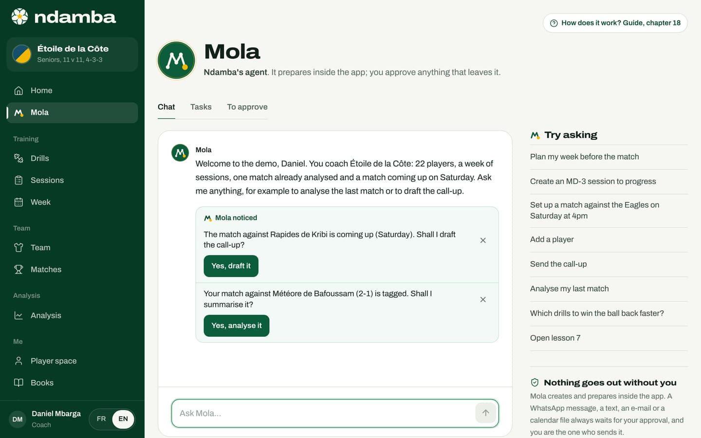
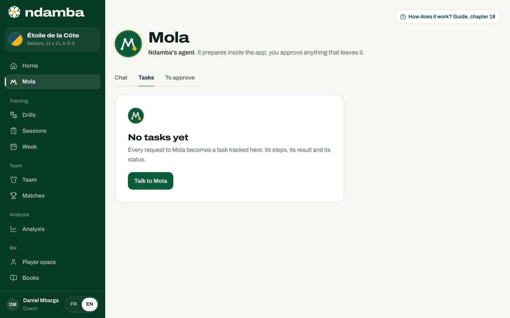
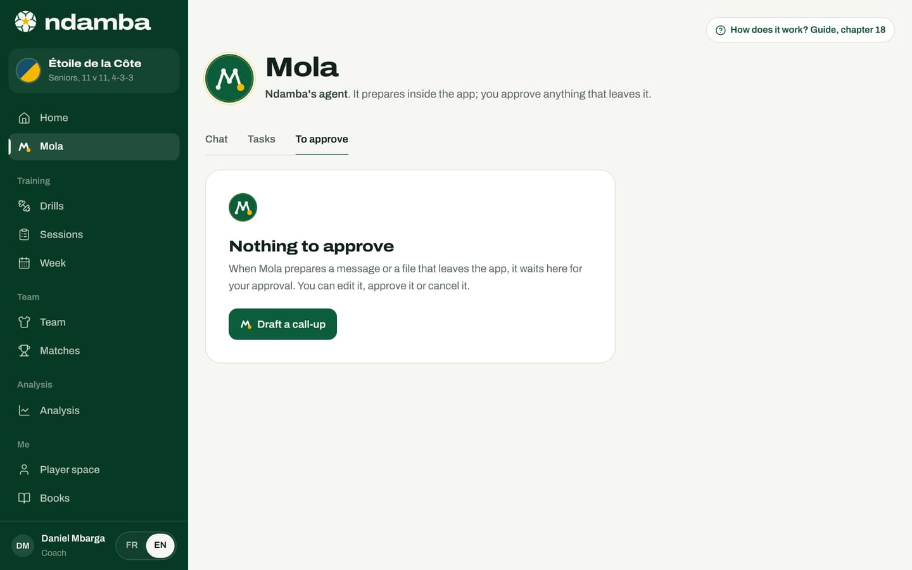
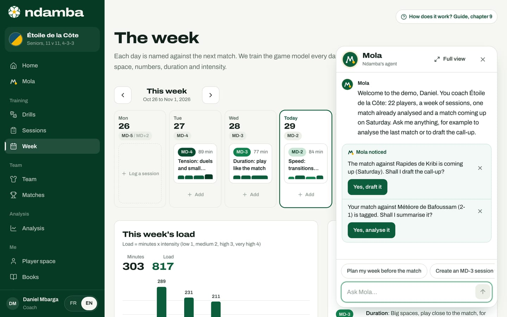
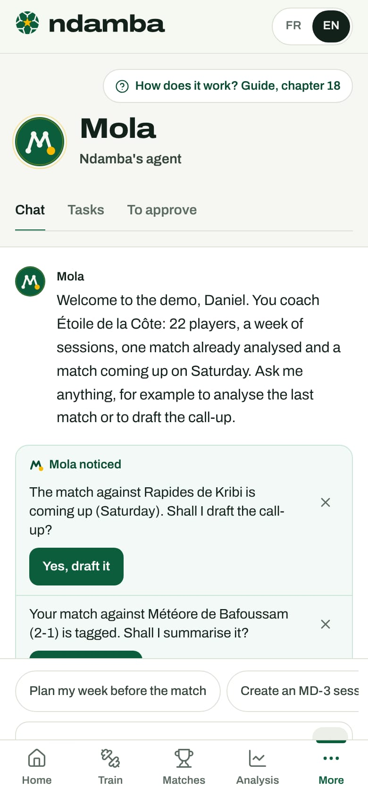

Mola, Ndamba’s agent
What Mola does for you and how to talk to it: the chat, the "Mola noticed" ideas, tasks, approvals (nothing goes out without you), the button on every page, the full list of its actions, how it understands, and ten sentences that work.
11 min read
In Africa, many coaches work alone, with no assistant and no analyst. In the evening there is still the week to plan, the call-up to write, the dates to put in the calendar: that work eats into the time meant for football. Mola is Ndamba’s agent. You tell it what you want in your own words, in French or in English, and it does it inside the app, step by step, in front of you. One rule has no exception: nothing leaves the app without your approval. Mola prepares the message or the file, and you are the one who sends it.
Where to find Mola
- In the menu, just below Home, tap Mola. On a phone, tap More, then Mola.
- On every page, Mola’s round button waits in the bottom right corner (see below), except on the Mola page and during live tagging, where the screen belongs to the match.
- The welcome conversation, when you set up your space, is already Mola (chapter 5).
The page opens with Mola’s avatar and this line: "Ndamba’s agent. It prepares inside the app; you approve anything that leaves it." Three tabs follow: Chat, Tasks and To approve.
The chat


In the demo, Mola greets the coach: "Welcome to the demo, Daniel. You coach Étoile de la Côte: 22 players, a week of sessions, one match already analysed and a match coming up on Saturday." At the bottom, the Ask Mola… field takes your request: Enter sends, Shift and Enter starts a new line.
On a computer, the Try asking column offers eight sentences: tap one and it goes out as if you had typed it. On a phone, these ideas are chips above the field. A player or a parent gets ideas about lessons and books ("Open lesson 1").
When Mola works, it announces what it is doing ("I’m analysing your match against Météore de Bafoussam."), then the steps tick one by one, like a passing move. The result follows: a short text, the items created and a button to open them (Read the full report, See the week, Open the session). See the 4 steps lets you reread what was done.
When Mola asks a question
If a detail is missing, Mola asks a single question, with ready-made answers as chips. In the demo, after "Set up a match", it asks "Who are you playing against?"; after "Lions de Makepe", "Which day, and at what time if you know it?"; after "Sunday at 10am", it schedules the match for Sunday 1 November at 10:00. If the answer does not help, it asks once more ("Sorry, I didn’t catch that."), then shows what it can do. "No" cancels. If a team is needed first, Mola asks for its name, creates it, then goes back to your request. It also offers the next step, which a simple "yes" accepts: Yes, plan the week after a match is set up, Plan the week around “Pin” after an analysis.
"Mola noticed"
Under the conversation, a green box, Mola noticed, offers at most two ideas drawn from your real data, each with its own button:
| What Mola notices | What it offers | The button |
|---|---|---|
| You have no team yet | "You don’t have a team yet. Shall we create it together?" | Yes, let’s create it |
| The next match is two to six days away and no session is planned from MD-4 to MD-1 | "Your match against … is … and the week is empty. Shall I plan the four sessions?" | Yes, plan the week |
| The next match is four days away or less and the call-up has not been prepared | "The match against Rapides de Kribi is coming up (Saturday). Shall I draft the call-up?" | Yes, draft it |
| The last match, played seven days ago or less, is tagged and not yet summarised | "Your match against Météore de Bafoussam (2-1) is tagged. Shall I summarise it?" | Yes, analyse it |
The button starts the action directly, with no sentence to retype. The Hide this idea cross sets it aside for the day.
Tasks
Every action request becomes a task, tracked in the Tasks tab; before the first one, it shows "No tasks yet" and the Talk to Mola button.


Filters sort the list: All, Running, To approve, Done and Cancelled. Each task has a name (Week planned, Call-up, Match analysis…), a status (Running, To approve, Done, Cancelled or Failed), your request with its date, the summary and the step details. A waiting task shows Review.
To approve: "Nothing goes out without you"
With Mola, only two things can leave the app: the match call-up (WhatsApp, text message or e-mail) and a calendar file (.ics). For these, Mola prepares everything, then stops: "Waiting for your approval before opening anything". The task moves to To approve, and a gold badge counts the waiting tasks on the tab and on Mola’s button.


Sending the call-up for the next match:
- Ask "Send the call-up on WhatsApp", tap Yes, draft it under "Mola noticed", or Draft a call-up in the To approve tab.
- Mola finds the match. If you edited the call-up text while setting up the match (chapter 11), it takes that text; otherwise it drafts it from the line-up: the opponent, the day, the time, the venue, the starters, the substitutes, and the meeting time, "Please arrive 45 minutes before kick-off with both kits, water and shin pads."
- The Waiting for your approval card appears: "Nothing goes out without you. When you approve, I open WhatsApp with the message ready: you choose the group and press Send."
- Under Send with, choose WhatsApp, SMS, E-mail or Copy, with a Number (optional) or an E-mail address (optional) if you like. Under Message, Edit then Done change the text.
- Tap Approve and open WhatsApp (or Approve and open SMS, Approve and open e-mail, Approve and copy). Your own app opens with the message ready: you press Send.
Mola confirms: "It’s open in WhatsApp. Pick the team group and press Send: I never send anything on your behalf." The task moves to Done. If you tap Cancel, nothing goes out: "Cancelled, nothing went out."
For the calendar, the card lists the week’s Events, and Approve and download saves the .ics file to open in your calendar.
The Mola button on every page


Mola’s round button stays in the bottom right corner of every page, above the tab bar on a phone; a gold badge on it counts the approvals waiting. Tap it: a window opens over the page, with the same conversation. Full view opens the whole page; the cross or Escape closes it.


Everything Mola can do today
| You ask | Mola does it inside the app | What leaves, with your approval |
|---|---|---|
| Plan the week | Creates the MD-4 to MD-1 sessions before the next match (or the match you name), built around the intention you give or, failing that, the one from the last report. It overwrites no session, does not fill days already gone and leaves free the day of another match and the day after it. | Nothing |
| Create a session | Builds a session with drills from the method, based on the day (MD-4 to MD+1, or Youth), the intention and the length. An MD-3 session with no date goes on the MD-3 day of the next match. | Nothing |
| Set up a match | Creates the match, suggests an automatic line-up in the team’s system and a captain. It refuses to create the same match twice and warns you if you already play that day. | Nothing |
| Add players | Creates the profile of one or several players, with number and position (midfield by default), and warns you if the number is already taken. | Nothing |
| Create a team | Creates the team with its age group, format and starting system, and makes it active. | Nothing |
| Draft the call-up | Takes the message for the next match, or writes it from the line-up. | The message, by WhatsApp, SMS, e-mail or copy |
| Export the week | Gathers the week’s sessions and matches. | An .ics calendar file |
| Analyse the last match | Computes the Index, writes what works and what to fix, suggests two drills. You can name the opponent. | Nothing |
| Suggest drills | Picks the three most useful drills for an intention or a skill, suited to the team’s age. | Nothing |
| Open a Leçon du Ballon | Opens one of the novel’s 40 lessons, with the link to its chapter. | Nothing |
| Open a book | Opens The Njangi Code or the novel Le Ballon qui voyage, at the chapter you ask for. | Nothing |
Mola also answers greetings and thanks. On the Free and Player Premium plans, it stops at five sessions in all. A week stops at the quota ("The free plan counts 5 sessions in all: I stopped there. Coach Pro makes them unlimited."); beyond that, it suggests Coach Pro, with the reminder that "the books and the 64 drills stay open to everyone".
What Mola does not do: it never sends anything itself, it deletes nothing, it does not change an existing session, and it does not tag matches for you. When it does not recognise a request, it says so and shows what it can do.
How Mola understands
Mola understands in two layers.
The first is a rules engine that runs in the browser, on your device. It reads French and English, whatever the interface language, and replies in the interface language. It tolerates small typos and missing accents ("create a recovery sesion for tomorow" is understood). It recognises days ("Saturday", "November 12", "11/12"), times ("4pm", "15:30"), week codes ("MD-3", "MD+1"), the words of the method ("counter-press" gives the Win it back intention), positions and channels. Once the app has loaded, this engine needs no network, costs nothing and answers at once. An automated test file checks it: 127 checks, all passing on 29 October 2026.
The second layer is optional: an artificial intelligence model. When the server hosting Ndamba has an Anthropic API key, each new request (not a plain yes or no) is also sent to the server function /api/mola, which asks a Claude model what the message means, within the same list of actions:
- The model does nothing itself. It interprets the sentence; the same code then does the work, with the same steps and the same approvals. Its answer is checked: only known actions and well-formed details are kept.
- The browser waits 3.5 seconds at most. With no answer, the rules reply alone; after two failures, Mola leaves the model aside for the rest of the visit.
- What goes to the server: the text of the message (600 characters at most), the language, today’s date, the team name, its age group, your role, and the opponent and date of the next and last matches. Not the players, not the tags, not the sessions. The key stays on the server.
Without a key, only the rules engine answers, as in the version tested for this guide: every answer quoted here comes from the rules.
Ten sentences that work
All of them were tried in the pro club demo on Thursday 29 October 2026, two days before the match against Rapides de Kribi.
| Type | What Mola does |
|---|---|
| "Analyse my last match" | Summarises the match against Météore de Bafoussam: "Solid Njangi: 67.9 out of 100", what works (Control), what to fix (Fixation), the drills R02 and S04, and Read the full report. |
| "Plan my week before the match" | In the demo: "Your week is already ready: 2 sessions before this match. I haven’t overwritten anything." Before the match on Wednesday 4 November, it creates MD-2 and MD-1 and adds: "I left 2 days free: another match or the recovery day after it falls on those days." |
| "Create an MD-3 session to progress" | Creates "Duration: play like the match", three blocks, 62 minutes, common thread "Progress". As the MD-3 day (Wednesday 28) has gone by, it dates it Thursday 29 and says so. |
| "Set up a match against the Eagles on Saturday at 4pm" | Schedules the match for Saturday 31 October at 16:00, picks the line-up, and warns: "Note: you already play Rapides de Kribi that day." |
| "Add Samuel Owona, number 9, striker" | Creates the profile, number 9, striker, and warns that number 9 is already worn by Serge Eyoum. |
| "Send the call-up on WhatsApp" | Drafts the call-up for the match against Rapides de Kribi and puts it in To approve. |
| "Export the week to my calendar" | Prepares an .ics file with the week’s four sessions and the match, waiting for your approval. |
| "Which drills to win the ball back faster?" | Suggests T01 (The Five Seconds), F06 (Rest Defence) and T06 (Attack, Then Defend). |
| "Open lesson 7" | "Lesson 7: “Dare the pass that cuts through”.", with the link to chapter 7 of the novel. |
| "Open The Njangi Code" | Opens the book: "the method, the 64 drills and the Njangi Index". |
And also: "What can you do?" gives the full list, and "an MD-2 session of 60 minutes on counter-pressing" creates a 60 minute speed session built around Win it back.